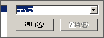
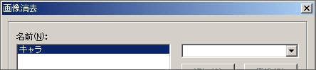

チュートリアル
先ほど表示したキャラクタを画面から消してみます。
「画像消去」コマンドを選択してください。

消去したい画像の名前をリストに追加します。ここではキャラを消したいので、右のリストから「キャラ」を選択して「追加」ボタンを押します。
すると、下記のように左のリストに名前が追加されます。

「画面効果」は画像を消す時の画面効果です。ここではデフォルトのままにしておきます。
OKをクリックしてダイアログを閉じます。F5を押して実行してみてください。
このようにキャラクタの絵がフェードアウトで消えれば成功です。